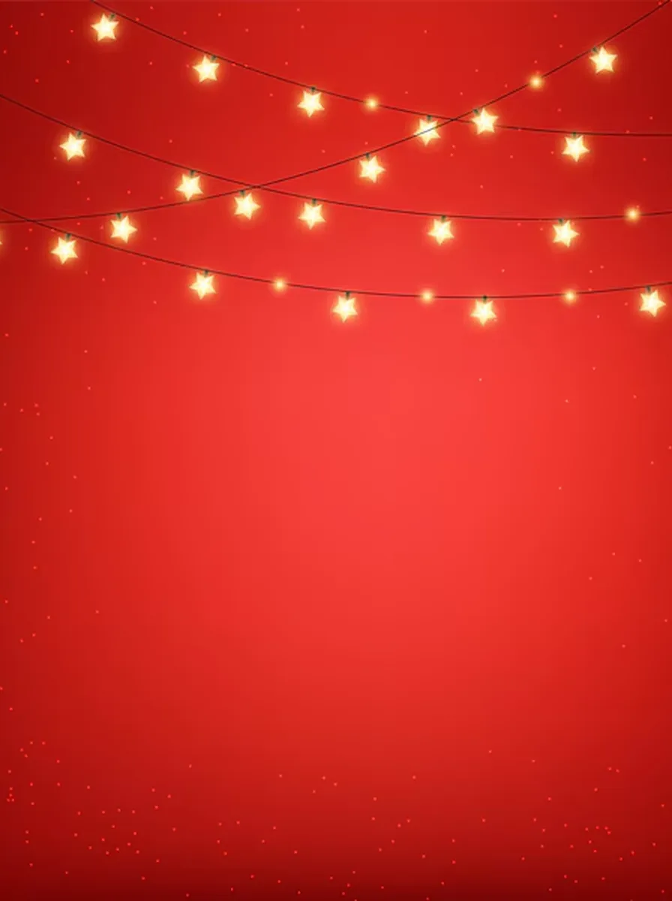
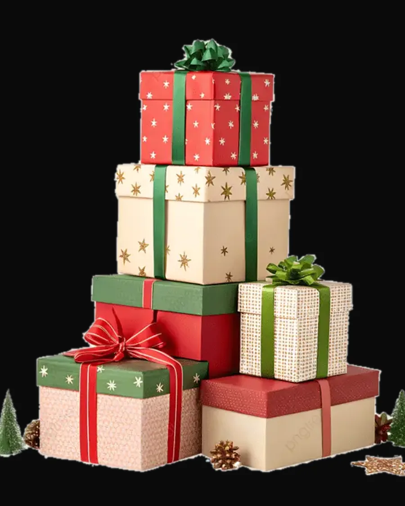
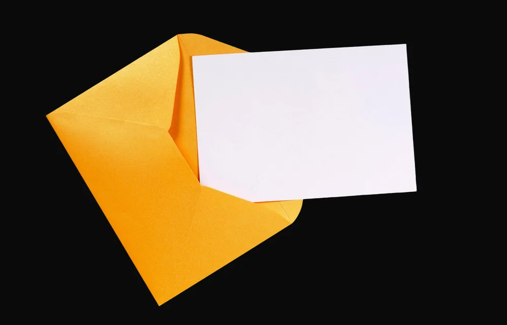
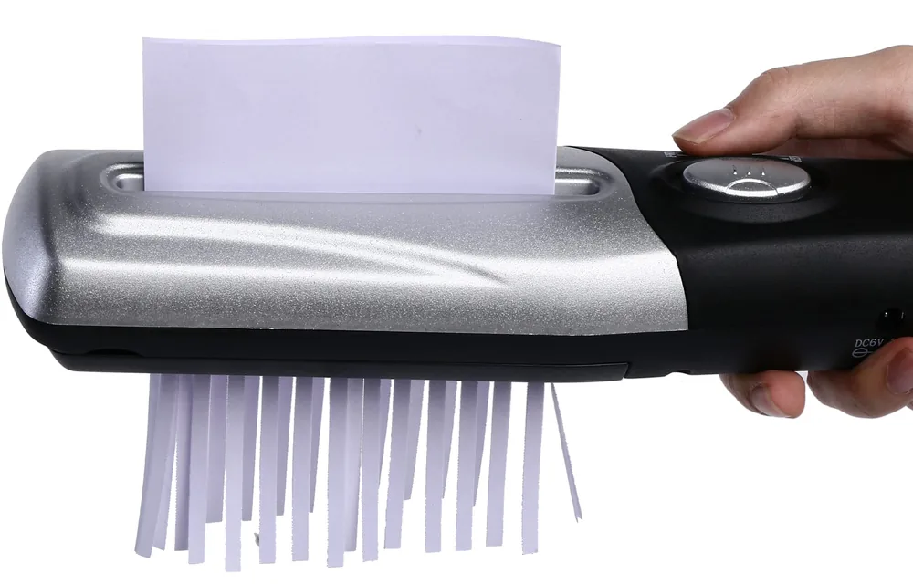
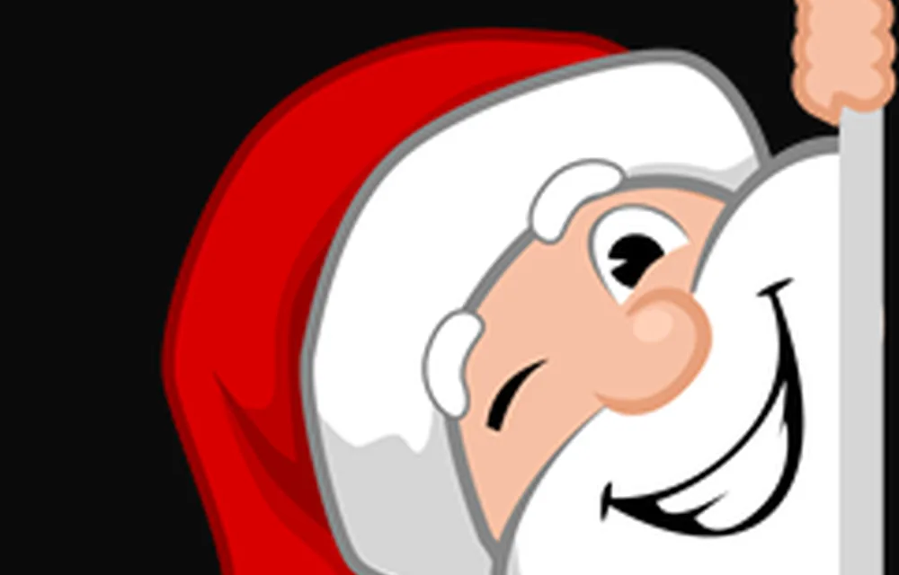
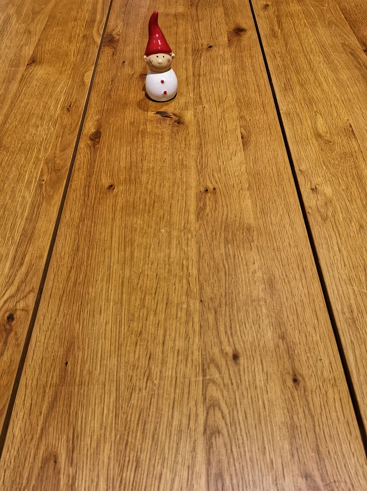

TEDxSofia 2026Смисълът да даваш
28.11.2026 · 24 лектори · 278 гости

Тази година TEDxSofia ще търси идеи за СМИСЪЛА ДА ДАВАШ. Не като жест. А като избор. Не като навик. А като позиция. ~ TEDxSofia 2026
Едно от 24 коледни предложения
Тази коледна изненада ще пристигне в пощата на всички участници в годините, лектори и на екипа, общо 1000 души, точно на 1 декември, когато започва отброяването до Коледа и голямото коледно пазаруване.
до 20.10.2026
Вие определяте размера и условията на отстъпката. Ние поемаме оформлението, представянето на събитието и двете изпращания.
- 200 евро без ДДС за участие
- код за отстъпка за вашия онлайн магазин
- лого, подходяща снимка и описания до 300 и до 150 знака
- ясни условия и срок на валидност на кода, който да обхваща коледното пазаруване
28.11.2026
Благодарност от сцената в началото и в края на събитието, с показване на логата на всички 24 партньори.
1 декември
Представяне на вашия бранд с описание до 300 знака, линк и код за отстъпка. И двата имейла — всички участници в годините, лектори и на екипа, общо 1000 души.
Искам подробната страница →5 декември
Напомняне с кратко описание до 150 знака, линк и код, по време на коледното пазаруване.
Смисълът да даваш за партньорите
Когато станете наш партньор, вие получавате възможност директно да общувате с публика, която цени идеите, споделя ги и ги разпространява – както онлайн, така и в реалния живот. Докоснете дар — картата му се ражда от праха.
Докоснете дар в колелото — отваря се картата му.
ДАР 1 / 5 · без такса
MET-1021 · прототипКакво ·
28.11.2026 г. Събота. Адресът е ул. “Екзарх Йосиф” 37. 278 гости в залата. Език: български.
На първо място нашите партньори получават възможност за директна комуникация с гостите и лекторите по време на паузите.
За да не остане и капка съмнение в СМИСЪЛА ДА станете наш партньор, ще ви споделим какъв е нашият NPS от последното ни събитие: +83.
TEDxSofia има 84 видео лекции в своя YouTube канал, които продължават да вдъхновяват хора, които дори не сме срещали.
Идеи, които си търсят партньор
Важна част от идеята на формата TED e създаването на преживявания за участниците. Можете да надникнете зад някои от щурите ни идеи и те да ви вдъхновят за още по-страхотни. Докоснете сърцето — спира на една от петте идеи.

Пет идеи около сърцето — всяка си търси партньор.
Сега си представете, че на всяко място в залата има празна коледна картичка с дискретно отпечатано Вашето лого и инструкции: "Напиши нещо, което искаш да дадеш на непознат." В обедната почивка събираме картичките и ги раздаваме на случаен принцип на гостите на излизане в края на събитието. Всеки получава картичка от някого, когото не познава.

А Вие наблюдавате как хората четат и се усмихват и отнасят в дома си Вашето лого.
Във фоайето пред залата има подредени няколко кутии, опаковани като подарък за Коледа, и всяка кутия има номер. Гостите имат право да разглеждат, разтръскват, обръщат кутиите, като трябва да познаят какво има вътре. А там Вие сте поставили ваш продукт или нещо, което свързваме с Вас.
Гостите пускат отговорите си в една кутия и в края на събитието Ваш представител изтегля на сцената 1,2 до 3 победители.
Представете си, че посланието Ви към публиката е написано на този лист, който е разрязан на малки листчета.

Гостите като едни истински детективи ще трябва да сглобят посланието, за да го прочетат, и да получат например код за намаление за Ваш продукт/услуга, които могат да ползват до Коледа.
Можем да организираме “Благодарствен аукцион" с фалшиви пари. Всеки гост получава 3 фалшиви банкноти с надпис “Благодаря" от едната страна и Вашето лого или послание от другата. По време на почивките те могат да ги дават на хора, които с които са се запознали.
Човекът с най-много банкноти в края на събитието печели истински дар от партньора (пример: Ваш продукт или услуга). Останалите могат да получат код за намаление при пазаруване онлайн.
Всеки гост получава малък брандиран плик на входа от таен Дядо Коледа. В плика има задача: "Намери някого, когото не познаваш, и му дай нещо малко днес – усмивка, комплимент, помощ. Но не казвай, че е от мен. Дядо Коледа" Само един получава плик, в който пише, че той е Тайният Дядо Коледа. Този човек трябва да отклонява деликатно подаръците от останалите гости, така че те да не разберат кой е той.

В края на събитието питаме кой е тайният Дядо Коледа и един от позналите получава подарък от Вас.
Как протича партньорството

Искам подробната страница
Събрани карти: 0 от 21
Попълнете формата
Очакваме вашият отговор до 20.10.2026